From Notebook to Publish‑Ready Report with Quarto
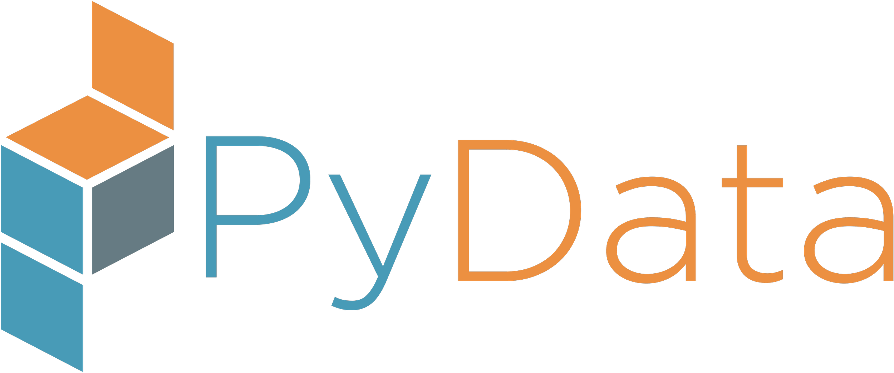
Christophe Dervieux
September 30, 2025
Let’s discuss publishing
World Happiness Report 2025
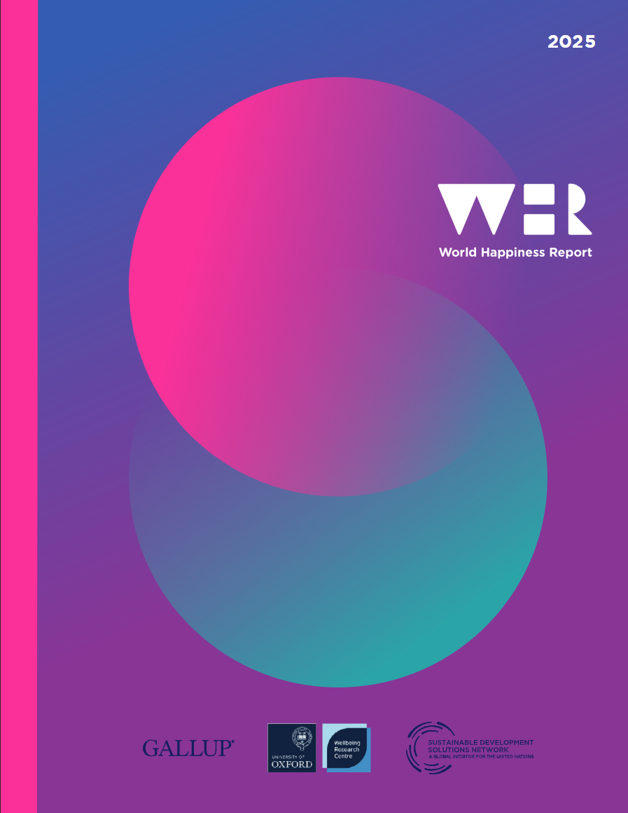World Happiness Report Data
From Notebook…
… to Publish‑Ready Report
Let’s use Quarto for this
 is an open-source, scientific, and technical publishing system
is an open-source, scientific, and technical publishing system
Why does this matters ?
- Faster sharing
- stakeholder-ready output
- reproducibility
- production-quality
About Quarto
What is Quarto exactly ?
A Command Line Interface to render and publish documents and projects
Multi-engine
Jupyter for Python, Knitr for R, QuartoNotebookRunner for Julia, Observable for JSMulti-format
HTML, PDF, HTML slides, PDF slides, pptx, docx, …Config-driven via YAML and CLI flags
Designed for reproducible input (.ipynb, .qmd) towards professional outputs.
How does it work ?
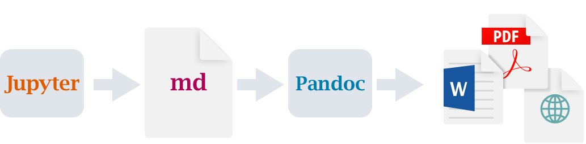Best results by re-executing the notebook using --execute
Where can we publish ?
❯ quarto publish --help
Usage: quarto publish [provider] [path]
Version: 1.8.24
Description:
Publish a document or project to a provider.
Available providers include:
- Quarto Pub (quarto-pub)
- GitHub Pages (gh-pages)
- Posit Connect (connect)
- Netlify (netlify)
- Confluence (confluence)
- Hugging Face Spaces (huggingface)
Accounts are configured interactively during publishing.
Manage/remove accounts with: quarto publish accounts Publishing system ?
- Configurable rendering
- Multi formats outputs
- Publications-ready features
Why multi-format matters ?
- Different audiences
- Different use cases
- Different distribution channels
- Different reading experiences
Configuring the rendering
Using YAML front matter
Configuring the rendering
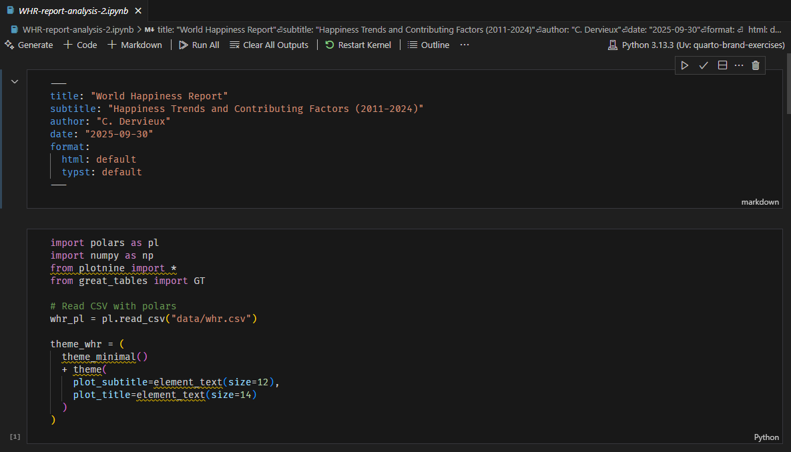Rendered nicely in
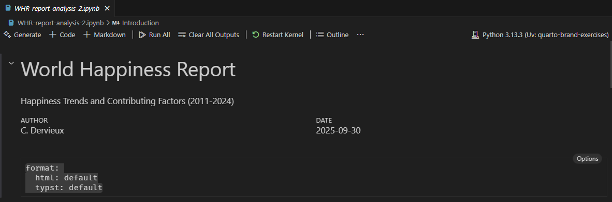
Rendered nicely in 
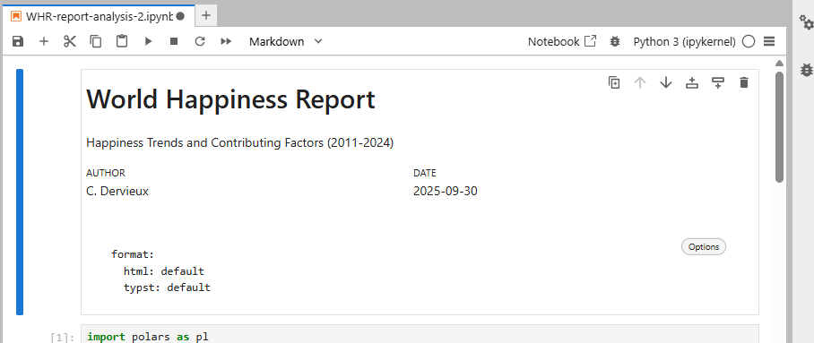
Publishing multiple formats
Same command
About PDF with Typst
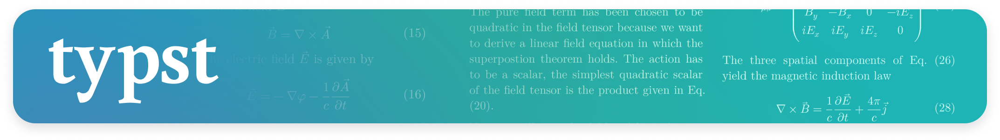
Improving the rendered output
No source code cell in output
Adding table of content
Just configuration in Notebook header
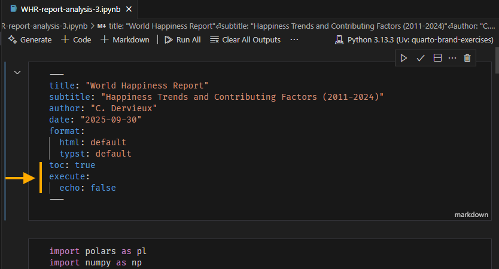Adding publications-ready features
About in-cell configurations
Caption and Numbering
Figures
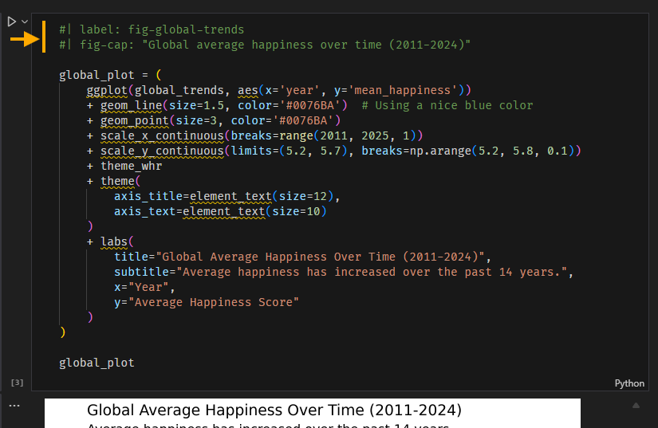Caption and Numbering
Tables
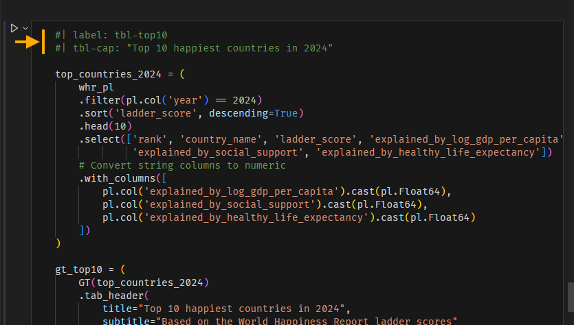Cross-referencing
Using @<label>
inside markdown cell
This will resolve to correct figure with numbering and reference link.
Inline computations results
Special Quarto syntax allowing to interleave computed value and text
Requires an execution pass through quarto render with --execute flag
What about theming ?

{kind=link}
Unified theming system
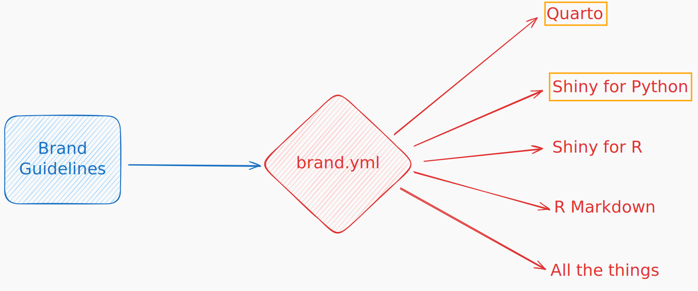Example for WHR report analyst
_brand.yml
meta:
name: World Happiness Report
link:
home: https://www.worldhappiness.report/
logo:
medium: whr_logo.png
color:
palette:
dark-purple: "#93358c"
light-purple: "#f8f6fb"
teal: "#04afaf"
dark-blue: "#086992"
hot-pink: "#eb068c"
light-blue: "#1aade4"
background: white
foreground: black
primary: dark-purple
secondary: hot-pink
tertiary: light-purple
dark: black
typography:
fonts:
- family: Montserrat
source: google
weight: [400, 700]
base:
family: Montserrat
weight: 400
headings:
family: Montserrat
weight: 700
color: dark-purple
link:
color: primary
decoration: nonebrand.yml specifications: https://posit-dev.github.io/brand-yml/brand/
A file next to the notebook
Automatically picked up by Quarto https://quarto.org/docs/authoring/brand.html
Logo support
For formats supporting logo:
Figures and Tables?
Tooling to use brand
pip install quartopip install brand-yml
Use brand.yml values in your Python code to style tables and figures
Takeaways
Using Quarto to publish Notebooks
Fast sharing of an existing analysis, with multiple formats from same source
Nicely formated outputs through configurations and Quarto specific features
Organization Branded publications at hand
A lot more can be done with Quarto
Deep dive at https://quarto.org
@cderv · @chrisderv
Thank You !
Published examples are at https://github.com/cderv/demo-ipynb-whr-report
Follow along at https://cderv.github.io/pydata-paris-2025-quarto-publish/ and https://quarto.org